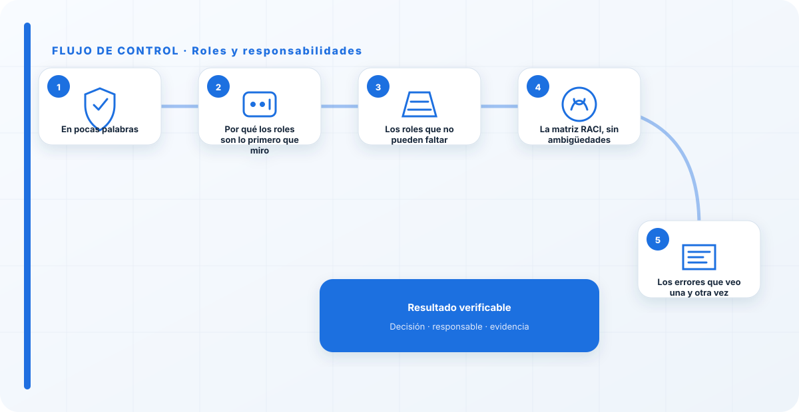
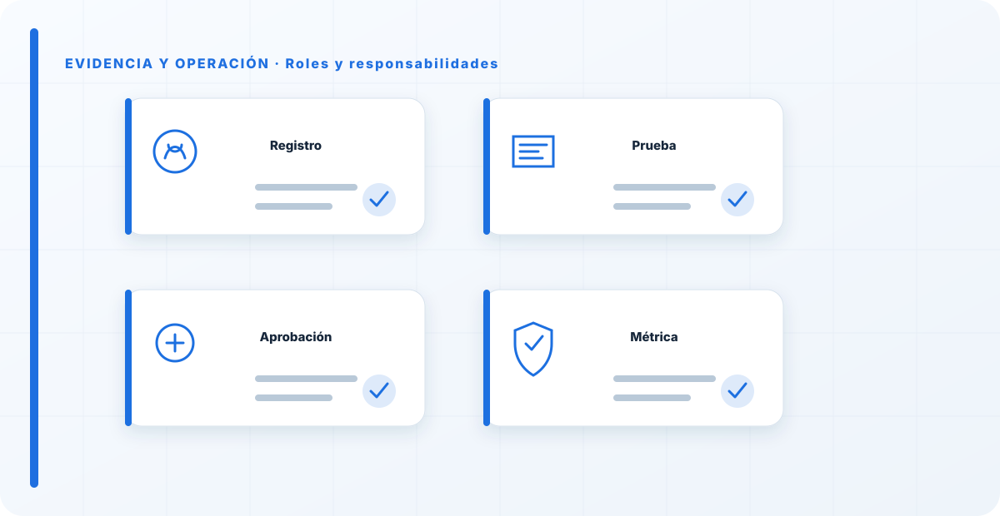

En pocas palabras
Cuando llego a una organización y pregunto quién aprueba un sistema de IA, la respuesta suele ser un silencio incómodo o un "depende". Ese silencio es el problema. Los roles del gobierno de IA no son un organigrama para el auditor: son la respuesta clara a quién propone, quién evalúa el riesgo, quién aprueba, quién opera, quién supervisa y quién retira cada sistema. Si esas preguntas no tienen un nombre detrás, no hay gobierno; hay difusión de responsabilidad, que es la forma elegante de decir que no responde nadie.
Por qué los roles son lo primero que miro
Antes que la política, antes que la metodología de riesgos, miro los roles. Porque un documento sin un dueño no se cumple, y un riesgo sin alguien que lo acepte formalmente no se gestiona: se ignora. He visto organizaciones con políticas de IA impecables que no servían para nada, simplemente porque nadie tenía la autoridad —ni la obligación— de pararse delante de un sistema y decir "esto no sale hasta que se cierre este riesgo".
La IA agrava un problema que ya existía con la tecnología en general: reparte capacidades por toda la organización. Un modelo puede tomar decisiones que afectan a personas, tocar datos sensibles y ejecutar acciones, y todo eso puede estar en manos de un equipo que nunca pensó que estaba asumiendo un riesgo corporativo. Definir roles es poner nombre y cara a cada una de esas responsabilidades antes de que el problema aparezca, no después.
Los roles que no pueden faltar
No hace falta inventar una estructura nueva. En mi experiencia, con estos roles bien definidos se cubre lo esencial, y casi siempre son personas que ya existen en la organización con un sombrero añadido.
El propietario del sistema
Es el rol que más se olvida y el más importante. Cada sistema de IA tiene que tener un dueño con nombre: la persona que responde de que ese sistema haga lo que debe, con los controles que debe, durante toda su vida. No es quien lo programa; es quien responde por él ante la organización. Cuando un sistema no tiene propietario, lo que en realidad no tiene es a nadie que se preocupe de su riesgo.
El comité de IA
El órgano que aprueba, prioriza y decide sobre las excepciones. No entra en el detalle técnico de cada sistema; decide si algo pasa o no pasa, con qué condiciones, y asume el riesgo en nombre de la organización. Le dedico una guía entera porque es donde más comités se convierten en teatro.
Seguridad y privacidad
Seguridad se ocupa de que el sistema esté protegido —accesos, datos, monitorización— y privacidad de que el tratamiento de datos personales sea legal y proporcionado. No son un trámite: son quienes tienen que poder decir "no" con criterio, y a quienes hay que consultar antes, no después de desplegar.
Legal y cumplimiento
Traduce la obligación regulatoria —el AI Act, la protección de datos, la normativa sectorial— en requisitos concretos para cada caso de uso. Su papel es decir, para un sistema dado, qué obligaciones aplican y qué no se puede hacer.
Auditoría interna
Comprueba, de forma independiente, que todo lo anterior funciona de verdad y no solo sobre el papel. Es el contrapeso: no propone ni aprueba, verifica.
La dirección
Es quien asume el riesgo residual y asigna recursos. Sin un patrocinio real de la dirección, el gobierno de IA se queda en una iniciativa de un departamento que nadie más respeta.

La matriz RACI, sin ambigüedades
Los roles solo sirven si se sabe quién hace qué en cada decisión concreta. Por eso bajo los roles a una matriz RACI: para cada actividad, quién ejecuta (R), quién rinde cuentas y aprueba (A), a quién se consulta (C) y a quién se informa (I). Esta es la base que uso; se ajusta a cada organización, pero la lógica no cambia.
| Actividad | Comité IA | Propietario | Seguridad | Privacidad | Legal | Auditoría | Dirección |
|---|---|---|---|---|---|---|---|
| Proponer un sistema de IA | I | R/A | C | C | C | I | I |
| Evaluar riesgo e impacto | A | R | R | R | C | I | I |
| Aprobar el despliegue | A | R | C | C | C | I | I |
| Operar y monitorizar | I | R/A | C | I | I | I | I |
| Supervisar cumplimiento | R | C | C | C | C | A | I |
| Auditar | I | C | C | C | C | R/A | I |
| Retirar un sistema | A | R | C | C | C | I | I |
Regla de oro: cada fila tiene una sola A. Si dos áreas se creen "las que aprueban", en realidad no aprueba nadie, y esa es la grieta por la que se cuela un despliegue sin control.
El error que más me encuentro no es que falten roles, es que sobran nombres en la casilla de "aprobar". Todo el mundo quiere estar en la foto de la decisión, pero nadie quiere firmarla. Una RACI con tres "A" en una fila es peor que no tener RACI, porque genera la ilusión de control. Prefiero un único responsable incómodo que un comité difuso donde todos asienten y nadie responde.
Los errores que veo una y otra vez
- Sistemas sin propietario. El fallo más común: nadie responde por ese modelo en producción.
- Varias "A" en la misma decisión. Responsabilidad compartida que en la práctica es responsabilidad de nadie.
- Seguridad y privacidad como sello final en vez de como consulta previa. Cuando entran al final, o frenan el proyecto o lo firman sin mirar.
- Auditoría que también propone o aprueba. Pierde la independencia que es toda su razón de ser.
- Roles en un documento que nadie ha aceptado. Un rol que su titular no sabe que tiene no existe.
Cómo sé que los roles funcionan
No me fío del organigrama; miro la realidad. ¿Qué porcentaje de los sistemas de IA en producción tiene un propietario con nombre? ¿Cada riesgo aceptado tiene detrás una firma concreta, o "lo aceptó el equipo"? ¿Cuántas decisiones ha tomado el comité que hayan cambiado algo? ¿La auditoría ha podido trabajar sin depender de a quién audita? Si esas respuestas son claras, los roles están vivos. Si todo es "en general lo llevamos entre todos", no lo están.
Checklist práctica
- Cada sistema de IA tiene un propietario con nombre.
- Existe una matriz RACI con una sola A por actividad.
- Seguridad y privacidad se consultan antes de desplegar, no después.
- Auditoría es independiente de lo que audita.
- La dirección asume formalmente el riesgo residual.
- Cada titular conoce y ha aceptado su rol.
Cómo lo llevaría a un entorno real
Cuando aterrizo roles y responsabilidades en una organización, no empiezo por comprar una herramienta ni por redactar veinte páginas. Empiezo por dibujar qué ocurre hoy: quién solicita el cambio, quién lo aprueba, qué sistemas intervienen, qué datos cruzan el proceso y quién se entera cuando algo falla. Ese dibujo suele descubrir más problemas que cualquier checklist. En gobernanza, lo peligroso no es solo carecer de controles; también lo es creer que existen porque alguien los escribió una vez.
Después separo lo imprescindible de lo deseable. Lo imprescindible debe poder comprobarse: un responsable identificado, una regla clara, una evidencia fechada y un mecanismo para reaccionar. En este caso revisaría especialmente Roles, responsabilidades y responsable. No me vale una respuesta del tipo «lo gestiona el proveedor» o «eso lo mira seguridad». Necesito saber qué persona toma la decisión, con qué información y dentro de qué plazo.
La implantación debe crecer con el riesgo. Un piloto interno puede funcionar con una ficha breve y una revisión manual. Un sistema que afecta a clientes, empleados, dinero o información sensible necesita segregación de funciones, pruebas independientes, monitorización y un expediente mantenido. Mi criterio es sencillo: cuanto más difícil sea deshacer el daño, más fuerte debe ser la barrera antes de producción.

Decisiones que deben quedar por escrito
Hay decisiones que no deberían vivir en una reunión ni en un mensaje de chat. Para roles y responsabilidades dejaría documentados el alcance, los supuestos, los límites de uso, las excepciones aceptadas y las condiciones que obligan a detener o reevaluar. El documento no tiene que ser enorme, pero sí debe permitir que otra persona entienda por qué se hizo lo que se hizo.
También registraría quién puede cambiar control, quién valida evidencia y quién recibe las alertas relacionadas con Roles. Cuando esas tres responsabilidades se mezclan, aparece el clásico problema: el mismo equipo construye, aprueba y declara que todo funciona. No siempre se puede separar por completo, sobre todo en organizaciones pequeñas, pero al menos debe existir una revisión por alguien que no dependa del éxito inmediato del despliegue.
Las excepciones merecen un tratamiento propio. Una excepción sin fecha de caducidad acaba convirtiéndose en la arquitectura real. Por eso exigiría motivo, riesgo aceptado, responsable, compensaciones, fecha de revisión y criterio de cierre. Si falta uno de esos elementos, no es una excepción gestionada; es una deuda invisible.
Un ejemplo práctico
Imaginemos que un equipo quiere incorporar roles y responsabilidades a un servicio que ya está en producción. La propuesta promete reducir tiempos y automatizar tareas, pero utiliza componentes que cambian con frecuencia. Antes de aprobarlo, pediría una prueba limitada, un inventario de dependencias, un flujo de datos y una definición clara de qué acciones quedan fuera del alcance.
Durante la prueba recogería resultados normales y casos límite. No solo miraría si funciona; comprobaría qué ocurre cuando faltan datos, cambia una versión, se pierde conectividad, llega una entrada manipulada o un usuario intenta superar sus permisos. Ahí es donde se ve si el diseño aguanta. En muchas pruebas felices todo parece seguro porque nadie ha intentado romper la hipótesis de partida.
Si los resultados son aceptables, la salida a producción tendría condiciones: versión fijada, configuración aprobada, logs disponibles, responsables de guardia, procedimiento de rollback y revisión tras las primeras semanas. Si alguno de esos elementos no existe, prefiero retrasar el despliegue. Un día de demora suele ser más barato que investigar después un comportamiento que nadie puede reconstruir.
Qué evidencias guardaría
Para demostrar que el control funciona conservaría evidencias que cuenten una historia completa, no capturas sueltas. La historia debe enlazar necesidad, decisión, implementación, prueba y operación. En roles y responsabilidades eso incluye como mínimo la ficha del activo, el diagrama vigente, la configuración aprobada, el resultado de las pruebas y el registro de cambios.
No guardaría información por acumular. Si los logs contienen prompts, documentos, datos personales o secretos, aplicaría minimización, control de acceso y retención. La evidencia debe ayudar a investigar y auditar sin crear una segunda fuga de información. Es frecuente endurecer el sistema principal y dejar un repositorio de evidencias abierto a demasiadas personas.
- Propietario y finalidad de roles y responsabilidades, con fecha de revisión.
- Inventario de Roles, responsabilidades y dependencias asociadas.
- Criterios de aceptación y resultados sobre responsable y control.
- Configuración efectiva, versión y aprobación del cambio.
- Alertas, incidentes, excepciones y acciones correctivas cerradas.
Señales de que el control no está funcionando
El primer síntoma es que nadie sabe responder con rapidez quién es el responsable. El segundo es que la documentación describe una versión distinta de la que está operando. El tercero es que las alertas existen, pero llegan a un buzón que nadie revisa. Cuando aparecen esos tres síntomas, el problema no es tecnológico: el control se ha desconectado de la operación.
También desconfío de las métricas demasiado perfectas. Cero incidentes, cero excepciones y cien por cien de cumplimiento pueden significar excelencia, pero con frecuencia significan que no estamos mirando. Prefiero indicadores que enseñen tendencia: tiempo de corrección, antigüedad de excepciones, cobertura de pruebas, cambios sin revisión y reincidencias.
Por último, revisaría el comportamiento después de cada cambio significativo. En IA, una actualización de modelo, dataset, prompt, herramienta, permiso o proveedor puede alterar el riesgo sin cambiar el nombre del servicio. Si el proceso solo reevalúa cuando se crea un proyecto nuevo, se quedará ciego durante la mayor parte de la vida útil.
Mi criterio de cierre
Considero que roles y responsabilidades está razonablemente controlado cuando el equipo puede explicar el proceso sin depender de una sola persona, reconstruir una decisión con evidencias y detener el servicio sin improvisar. No busco perfección documental; busco que la organización pueda tomar decisiones repetibles bajo presión.
El cierre no consiste en marcar todas las casillas. Consiste en demostrar que los riesgos relevantes tienen propietario, que los controles se prueban y que las desviaciones producen una acción. Si la evidencia no cambia ninguna decisión, probablemente estamos generando burocracia. Si una decisión importante no deja evidencia, estamos creando fragilidad.
Este enfoque es el que intento mantener en toda CyberLibrary AI: explicar el control de forma que lo entienda negocio, pero con suficiente profundidad para que arquitectura, seguridad, auditoría y operaciones puedan aplicarlo de verdad.
Referencias y marcos relacionados
Contenido educativo y técnico. No sustituye asesoramiento jurídico ni una auditoría formal.